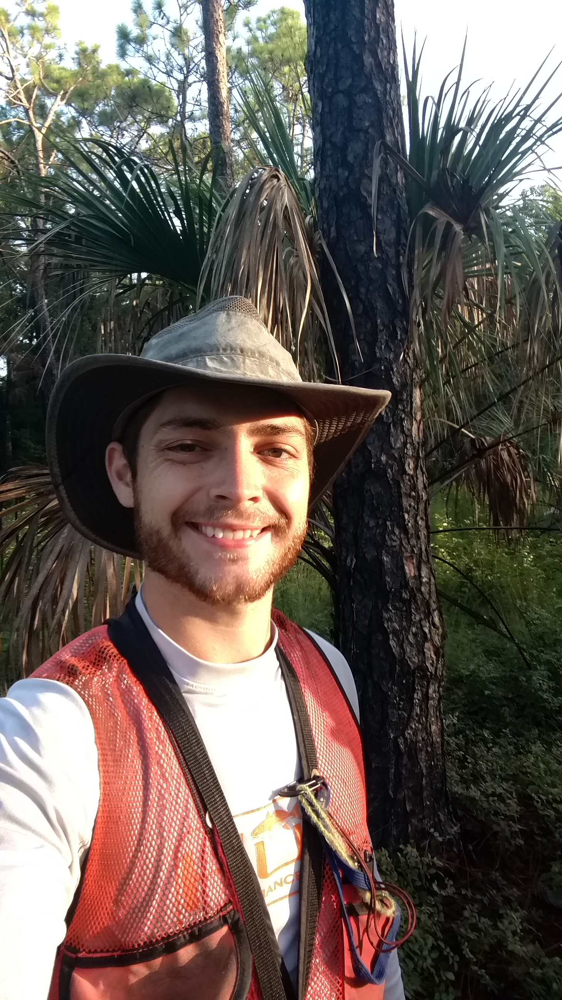

Website building services for individuals and small businesses
Forestry consulting services for local landowners
Geospatial analyst services
I encourage anyone with questions or requests to contact me
A collection of pictures I like
Hi! I am Ryan Hensel
I currently live in Tallahassee, Florida, and I am originally from Tucson, Arizona. I have worked in the field of forestry for several years, as both a wildland firefighter, and as a traditional forester. I also have experience making digital maps and performing geospatial analysis, as well as building websites. I have a B.S. in Forestry from Northern Arizona University.